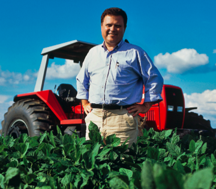

Ux
Documentação.
Tipografia
A Merriweather é um fonte serifada, traz elegância e caráter mais conservador, costuma representar tradição, respeito e sofisticação. Já a Roboto, fonte sem serifa, moderna e mais acessível, além de ser amplamente usada pela internet.
Merriweather
Títulos
Aaabcdefghijklmnopqrstuvwxyz
Roboto
Subtítulos e parágrafos
Aaabcdefghijklmnopqrstuvwxyz
Paleta
Paleta que traz o verde do tema de agrotech e o preto que introduz o dark mode.
#3FA043
#94B902
#ffffff
#000000
#0e0e0e
#d8d8d8
Persona

Wesley
34 anos | Centro-oeste | Funcionário de uma lavoura